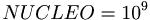

De: La Frikipedia, la enciclopedia extremadamente seria.
De: La Frikipedia, la enciclopedia extremadamente seria. De: La Frikipedia, la enciclopedia extremadamente seria.
Los primeros ordenadores se crearon allá por el 3000 aC, en la época de la antigua Grecia. Su construcción resultaba demasiado costosa, por lo que solo existía un ordenador en la Tierra. Éste usaba un SO llamado Hasefroch (no, no el de Bill Gates, uno mucho más anterior)
En aquella epoca, las tarjetas de red eran ya inalámbricas. Consistían en una catapulta en la cual se ponian esclavos con mensajes, que eran lanzados al espacio hasta llegar al destino. Por lo tanto, el ping en el Counter estaba sobre 100 años, y el rendimiento se veía aún más perjudicado. Y ni nombrar una conversación de Méssenller. Aparte de eso, habia una gran pérdida de paquetes durante el envio, normalmente causada por la baja precisión de los lanzamientos con catapulta.
¿No os preguntáis qué comían los esclavos, de dónde salían tantos y cómo se refrigeraban? ¡Pues he aquí la respuesta! ¡Hala, hala, saciad vuestra curiosidad! Procedían ni mas ni menos que de Persia, un poco más a la derecha de la ubicación del primer ordenador. Los centenares de miles de esclavos eran alimentados a base de planchas de granito perforadas, que resultaron no ser lo suficientemente nutritivas como para alimentarlos. Se dice que aquellas tierras se llamaron más tarde "Dentolandia", aunque desconocemos la causa real, se cree que es por la gran cantidad de dientes que perdian los esclavos al intentar masticar las planchas de granito. Además, trabajar 30 horas diarias sin descanso (nisiquiera 5 minutitos) les resultaba ligeramente pesado y sudaban demasiado, por lo que era necesario refrigerarlos. Al principio no eran refrigerados, por lo que el 75% de los esclavos acababan inmolados. Más tarde se decidió matar a los gota de sudor. Aquello provocó una crisis informática, que terminó gracias a técnicas de refrigeracion (mezclar las planchas de granito con cubitos de inmigración ilegal.
Posteriormente, los ordenadores fueron evolucionando. Los edificios empezaron a hacerse de varias plantas y de esa manera el espacio usado se veía considerablemente reducido.
Empezaron a surgir las primeras pantallas planas, los procesadores de doble núcleo (llamados asi porque  esclavos), la ram DDR3 (ya que los almacenes de trastos tenian 3 pisos) y demás tecnologías chachis. El internet se fue modernizando. De catapultas pasaron a esclavos que, ayudados por el Monstruo de Espagueti Volador volaban cual grajo por el monte. Estos esclavos, al llegar al planeta de destino y ver que estaba desierto, colonizaron Marte. Esa colonia se cree que dio origen a los marcianos, pero eso es otra historia que carece de importancia para el friki de clase media-alta como él y puede que yo e incluso alguien (claramente no lo eres tú, ya que en ese caso no estarías aquí).
Como iba diciendo, se fueron haciendo carreteras de un componente a otro del ordenador, cada vez más anchas. Los datos se empezaron a transportar en carros tirados por esclavos (¿qué creíais? ¿Que iban a usar animales? ¡Lo tenéis claro!) y de esa manera el transporte se realizaba en tan sólo unas horas. Las tarjetas gráficas se hicieron más y más potentes, hasta conseguir una tasa de refresco en las pantallas de 15 segundos, ya que se empezaron a usar adivinos para saber lo que iba a suceder horas después y así poder empezar a grabar la imagen en el granito mucho antes de que sucediera.
Autor(es):